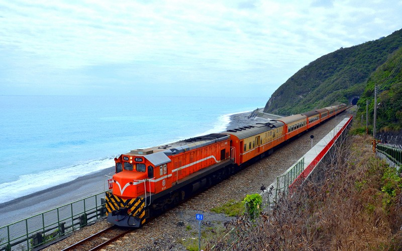
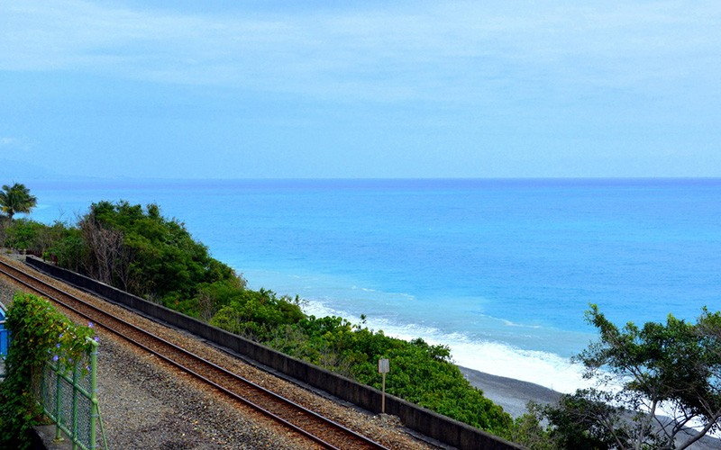
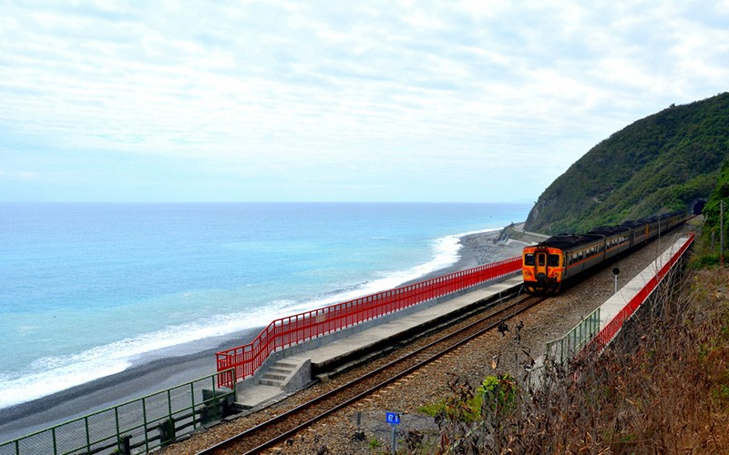
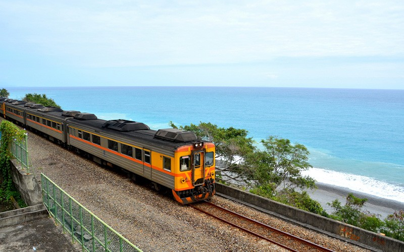
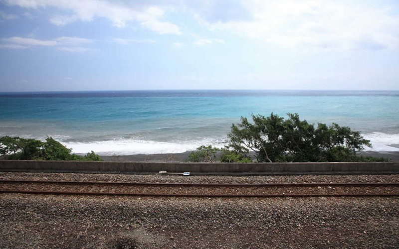
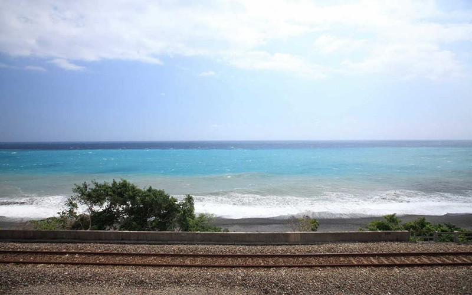
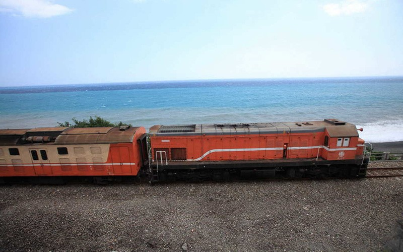
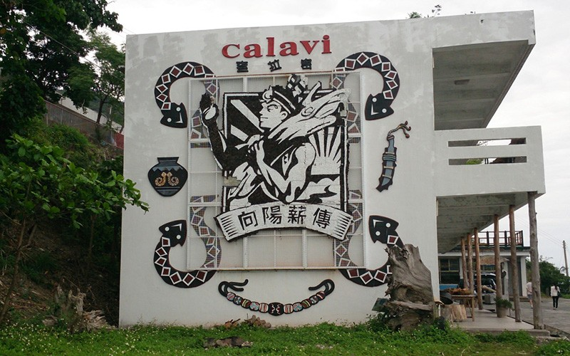
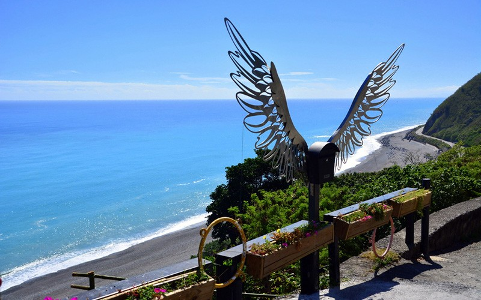

多良火車站
在最美麗的車站眺望最美麗的大海，裁撤了車站卻裁不掉它的美麗。
位於太麻里鄉的尾端，台九線417.5公里處右轉即至。
介紹
多良火車站原為臺鐵招呼站，因業務清淡自2006年7月1日起結束旅客業務，同年10月1日正式裁撤。
因站址原為山坡地，南迴鐵路工程處特別將車站以高架設計，一樓為候車室與售票處，二樓為月台，月台上的紅色欄杆為明顯特色，站在此處可鳥瞰太平洋，被譽為全臺灣最美的車站，吸引許多鐵道迷前來朝聖。
來到這最美麗的車站參觀時請注意，因月台與軌道間無任何安全措施，請勿隨意跨越鐵軌以免發生意外。
特色
◆ 阿底旦文化故事館
在88風災後，許多熱心人士出錢出力規劃而成的向陽薪傳木工坊，是多良村的漂流木工藝創作的基地。
有咖啡、大海、臺灣最美麗的車站，還有用心雕刻的木雕生命。向陽薪傳木工坊利用漂流木，製作了大型木工家具、客製紀念品、小朋友的童玩等，歡迎來木工坊走走，購買物美價廉的創作品，也可幫助部落的工藝產業發展唷！
【資料來源：臺東觀光旅遊網】
多良火車站在最美麗的車站眺望最美麗的大海，裁撤了車站卻裁不掉它的美麗。位於太麻里鄉的尾端，台九線417.5公里處右轉即至。介紹多良火車站原為臺鐵招呼站，因業務清淡自2006年7月1日起結束旅客業務，同年10月1日正式裁撤。因站址原為山坡地，南迴鐵路工程處特別將車站以高架設計，一樓為候車室與售票處，二樓為月台，月台上的紅色欄杆為明顯特色，站在此處可鳥瞰太平洋，被譽為全臺灣最美的車站，吸引許多鐵道迷前來朝聖。來到這最美麗的車站參觀時請注意，因月台與軌道間無任何安全措施，請勿隨意跨越鐵軌以免發生意外。特色阿底旦文化故事館在88風災後，許多熱心人士出錢出力規劃而成的向陽薪傳木工坊，是多良村的漂流木工藝創作的基地。 有咖啡、大海、臺灣最美麗的車站，還有用心雕刻的木雕生命。向陽薪傳木工坊利用漂流木，製作了大型木工家具、客製紀念品、小朋友的童玩等，歡迎來木工坊走走，購買物美價廉的創作品，也可幫助部落的工藝產業發展唷！
Duoliang Train Station Overlook the most beautiful sea from the most beautiful station. The train station was decommissioned, but its beauty remains. It is located at the end of Tamali Township. Turn right at the 417.5 km marker on Provincial Highway 9, and you will be there. Introduction Duoliang Train Station was originally a staffless station of Taiwan Railway. Because it did not get a lot of business, it stopped serving passengers on July 1, 2006, and was decommissioned on October 1 of the same year. Because the station was originally located on a hill, the TRA South-Link Line Construction Department designed a special elevated building. The waiting area and ticket office are on the first floor, and the platforms are on the second floor. The red handrails on the platform are a conspicuous feature, and the station overlooks the Pacific Ocean. It is called the most beautiful station in Taiwan, and it attracts many railway enthusiasts. When visiting this beautiful station, please note that there is no safety measure between the platform and the track. Do not attempt to cross the tracks. Feature Adidan Cultural Museum After Typhoon Morakot buffeted Taiwan in August 2009, many kind people donated money and time to set up Sunrise Driftwood Workshop as the base for driftwood art in Duoliang Village. Here you can drink a coffee, view the ocean, explore the most beautiful station in Taiwan, and peruse heartfelt wood carvings. Sunrise Driftwood Workshop utilizes driftwood to make large wood furniture, customized souvenirs, and children’s toys. You are welcome to visit the workshop and purchase some cheap and cheerful art pieces, which supports the tribe’s art industry development!
多良駅 最も美しい海景色が見える最も美しい駅。廃止後もその美しさは変わりません。 太麻里郷の末端に位置します。台九線を417.5km進んで右折してください。 紹介 当初、多良駅は台湾鉄道の無人駅でした。利用者が減少したため2006年7月1日、旅客輸送業務を終了し、同年10月1日に廃止されました。 山の斜面に位置するため、南迴鉄道工程処が高架設計を施し、一階に待合室と乗車券販売所、二階にプラットホームを設けました。プラットホームの赤い手すりがよく目立ちます。ここから太平洋を見下ろせることから、台湾で最も美しい駅と呼ばれ、大勢の鉄道ファンが一目拝もうと集まります。 プラットホームと軌道の間には、事故防止設備が設置されていません。レール上を歩くと危険ですのでご注意ください。 特色 阿底旦文化故事館八八水害の後、熱意ある人々の出資と尽力により企画され、完成した向陽薪伝木工坊は、多良村の流木工芸品創作の基地です。 ここにはコーヒー、海、台湾で最も美しい駅、そして丹念に彫り刻む木彫りの人生があります。向陽薪伝木工坊は、流木を利用して大型の木製家具、特注記念品、児童用玩具等を製作しています。良質な作品をお手頃価格で購入できると同時に、部落の工芸産業の発展に寄与することができます。